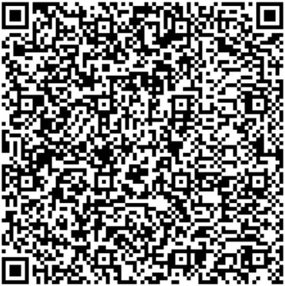

Dukung Pengembangan Renamerged
Terima kasih atas dukungan Anda!
Renamerged adalah layanan gratis yang dikembangkan dengan dedikasi tinggi. Donasi Anda akan sangat membantu untuk:
- 🚀 Mengembangkan fitur-fitur baru yang lebih canggih
- ⚡ Meningkatkan performa dan kecepatan server
- 🔧 Maintenance rutin dan perbaikan bug
- 📚 Dokumentasi dan tutorial yang lebih lengkap
- 🌟 Menambah format file support (RAR, 7Z, dll)
Metode Donasi
QRIS (Scan & Pay)
UtamaScan QR Code dengan aplikasi e-wallet favorit Anda

Klik QR untuk memperbesar
✓ Semua E-Wallet
✓ Instant Payment
✓ Aman & Terpercaya
FAQ Donasi
Apakah ada minimum donasi?
Tidak ada minimum! Setiap nominal donasi sangat dihargai, mulai dari Rp 5.000 pun sangat membantu.
Apakah donasi akan mendapat fitur premium?
Renamerged akan tetap gratis untuk semua. Donasi adalah bentuk apresiasi untuk mendukung pengembangan.
Bagaimana dana donasi digunakan?
Dana akan digunakan untuk biaya server, development tools, dan pengembangan fitur baru.